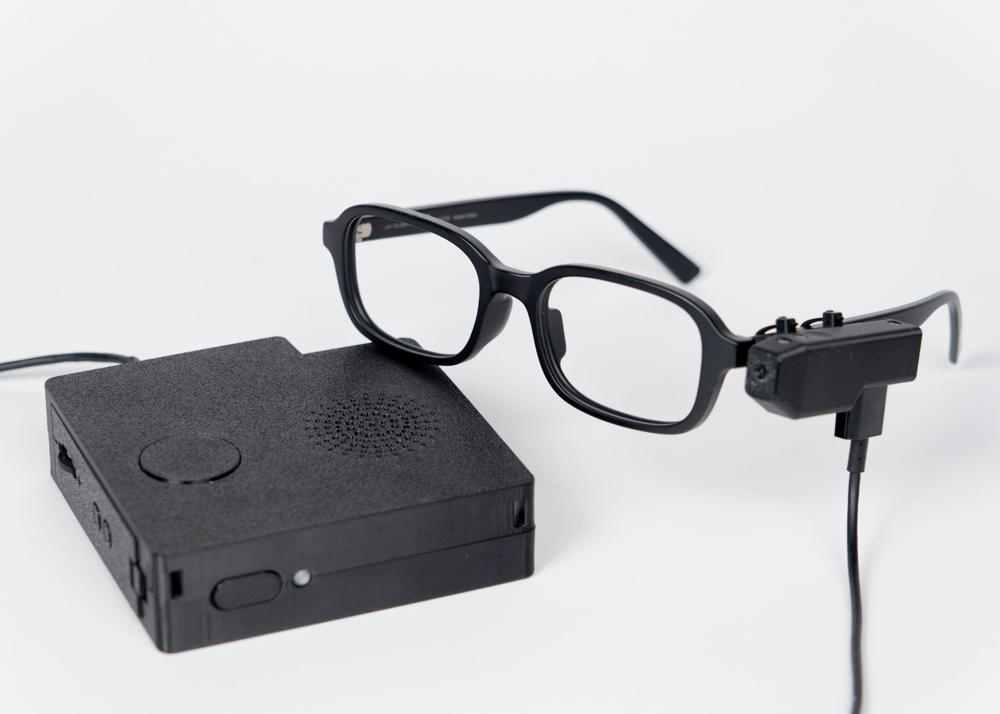

PHOTON GLASS: documentation and electronics
構成、音声が出るまでの処理、部品間の接続、Raspberry Pi の役割。
約 7 分
リポジトリの構成、製作の手順、OSS のライセンス、GitHub と Scrapbox の使い分け。
約 8 分
基板の構造、メイン基板と回路図、40ピンヘッダ、音声経路、カメラユニット、製造、拡張。
約 15 分 ＋ 質疑 10 分
各ページの 「補足」 は発展的な内容。読まなくても先に進める。

一人称視点のカメラで捉えた情報を、音声などで返すメガネ型デバイス。サンプルのプログラムは、撮影した文字を読み上げる。
カメラ、シャッター（カメラボタン）、カメラ基板。HDMI ケーブル1本で本体と接続する。
Raspberry Pi Zero 2 W とメイン基板。スピーカー、ボタン4個、状態表示の LED、音量つまみ。
ボタン入力を待ち、撮影し、クラウドの API で文字認識と音声合成を行い、再生する。
| 項目 | 内容 |
|---|---|
| SoC | RP3A0（Arm Cortex-A53 4コア 1 GHz） |
| メモリ | 512 MB |
| 無線 | Wi-Fi 2.4 GHz（802.11 b/g/n）、Bluetooth 4.2 |
| カメラ端子 | CSI-2（22ピンの FFC） |
| 40ピンヘッダ | GPIO・I2S・I2C・電源 |
| 記憶装置 | microSD（OS とプログラム） |
| 大きさ | 65 × 30 mm |
| 処理 | しくみ |
|---|---|
| 自動起動 | systemd のサービス（photonglass）が main_async.py を起動 |
| 撮影 | picamera2（libcamera） |
| ボタン・LED | gpiozero で GPIO を読み書き |
| 音声出力 | I2S で DAC へ（dtoverlay=hifiberry-dac） |
| 通信 | Wi-Fi 経由で Google Cloud の API を呼ぶ |
| 遠隔操作 | SSH（photonXX.local） |
設計データ・プログラム・手順書を、1つのリポジトリで公開している。
構成を把握すれば、製作も改変も自分で進められる。
github.com/photonglass/photonglass
迷ったら、まず README.md と docs/BUILD_GUIDE.md。
| 手順 | 作業 | 内容 | 読むファイル |
|---|---|---|---|
| 0 | そろえる | 部品・Raspberry Pi・ケーブル・バッテリー | docs/BUILD_GUIDE.md |
| 1–2 | 基板 | JLCPCB に発注して、7個を手はんだ | hardware/JLCPCB_ORDERING.md |
| 3 | 印刷 | Bambu Lab A1・PETG で筐体を印刷 | enclosure/*/README.md |
| 4 | 組み立て | 電源ケーブルは +/− を必ず確認 | enclosure/usb-power-cable/README.md |
| 5 | Pi の準備 | OS・音・プログラム・API キー（setup_pi.sh でほぼ自動） | docs/SETUP_RASPBERRY_PI.md |
| 6 | テスト | LED → ボタン → スピーカー → カメラ | software/test/hw_test.py |
| 7 | 動かす | 電源を入れたら自動で起動 | software/main_async.py |
check_setup.sh で準備の状態を確認できる。解決しない場合は GitHub の Issues で質問する。
api_key.txt は各自で作成するファイル。GitHub や SNS には載せない。SD カードのイメージにも含まれる。
基板・筐体の設計データ。基板のシルクにも記載。
software/ のプログラム。
README・写真・効果音など。
個人で使うだけなら、改変したデータを公開する義務はない。正確な条件は各ライセンスの全文で確認すること。
| GitHub（photonglass/photonglass） | Scrapbox（授業用プロジェクト） | |
|---|---|---|
| 公開範囲 | 公開（誰でも閲覧できる） | 非公開（メンバーのみ） |
| 置くもの | 設計データ、プログラム、製作・セットアップの手順書、ライセンス | 授業の準備と当日の進め方、ネットワークと接続情報、受講者向けの操作メモ |
| 更新の仕方 | ブランチで変更し、Pull Request で確認してから main に入れる。履歴がすべて残る | メンバーがその場で書き換える。授業ごとに変わる情報に向く |
| 質問・報告 | 不具合や改善の提案は Issues へ | 授業の連絡、当日の困りごと |
| 書かないもの | パスワード、API キー、Wi-Fi の名前とパスワード、IP アドレス | （非公開なので書いてよい。ただし GitHub には書き写さない） |
PHOTON GLASS を作る・直すために誰もが必要とする情報なら GitHub。この授業を運営するためだけの情報なら Scrapbox。
基板上の銅箔パターンが部品間を配線している。
信号と電源がどこを通るかを、回路図と実物の両方で追う。
IC・コネクタ・抵抗など。JLCPCB が載せてはんだ付けまでする（7個だけ手はんだ）。
白い文字。部品の名前（R1、CN3…）や向きの印。
緑の膜。銅がさびたり、はんだが広がったりするのを防ぐ。
配線そのもの。表と裏の2層を、ビア（小さな穴）でつなぐ。
ガラス繊維＋樹脂。厚さ 1.6 mm。
ドラッグで回転、ホイールやピンチで拡大できる。
同じ名前のラベル（BCK・SW_CAM など）が付いた線は、図の上で離れていても接続されている。
上段が偶数番、下段が奇数番。左端が 1・2 番。
camera_button = Button(17)
sub_button = Button(22)
red_LED = LED(9)
引数は GPIO（BCM）番号で、物理ピン番号とは異なる。
Pi → DAC は I2S という3本の線：BCK（ビットのリズム）＝物理12番、LRCK（左右の切り替え）＝35番、DIN（データ）＝40番。PAM8304 は D級アンプ。高速にスイッチして増幅するので、熱になって逃げる電力が少ない。
| HDMI の線 | 本来の用途 | PHOTON GLASS では |
|---|---|---|
| 1·3 4·6 7·9 | 映像データのペア | カメラの画像（データ2本＋クロック） |
| 10·12 | クロックのペア | カメラの電源オン・LED |
| 13·15 | CEC・SCL | カメラの設定（I2C） |
| 16 | SDA | カメラボタン → GPIO17 |
| 14 | 予備 | カメラ基板の LED |
| 18 | +5V | 3.3 V の電源 |
HDMI は映像出力には使わず、差動ペアを含む汎用の配線として使っている。
| 手順 | 作業 | 内容 | ファイル |
|---|---|---|---|
| 01 | 回路図・基板を設計 | KiCad 9 以降、または Fusion（Eagle 形式） | hardware/*/kicad/ |
| 02 | ガーバーを作る | 層ごとの図面（銅箔・レジスト・シルク・穴・外形） | hardware/*/gerber/ |
| 03 | 部品表と位置 | BOM（何を）と CPL（どこに・どの向きで） | hardware/*/jlcpcb-assembly/ |
| 04 | JLCPCB に発注 | 基板の製造と部品の実装まで。数週間で届く | hardware/JLCPCB_ORDERING.md |
| 05 | 手はんだ 7 個 | 音量つまみ、ボタン4個、電源・スピーカーのコネクタ | docs/parts_list.md |
元の設計（2019年）には入手できなくなった部品があった。現行品に置き換え、全部品のピン配置をデータシートと照合済み（不一致 0）。
メイン基板 2026 / PB-4、カメラ基板 2026 / PC-4。手元の基板の版はシルク印刷で確認できる。
メイン（GPIO27）・上（GPIO23）・下（GPIO24）は、現在のプログラムでは未使用。再読み上げや話速の変更などを割り当てられる。
処理を1つずつ順に行う逐次版で、流れを追いやすい。実際に動いているのは、処理中もボタンに反応できる非同期版の main_async.py。
カメラユニットは src/camera_case.py（CadQuery）で定義。寸法を変えて実行すると全部品を再生成できる。
プログラムを変更して動かなくなった場合は、Raspberry Pi で photonglass-reset を実行すると初期状態に戻る（変更したファイルは backup フォルダに残る）。